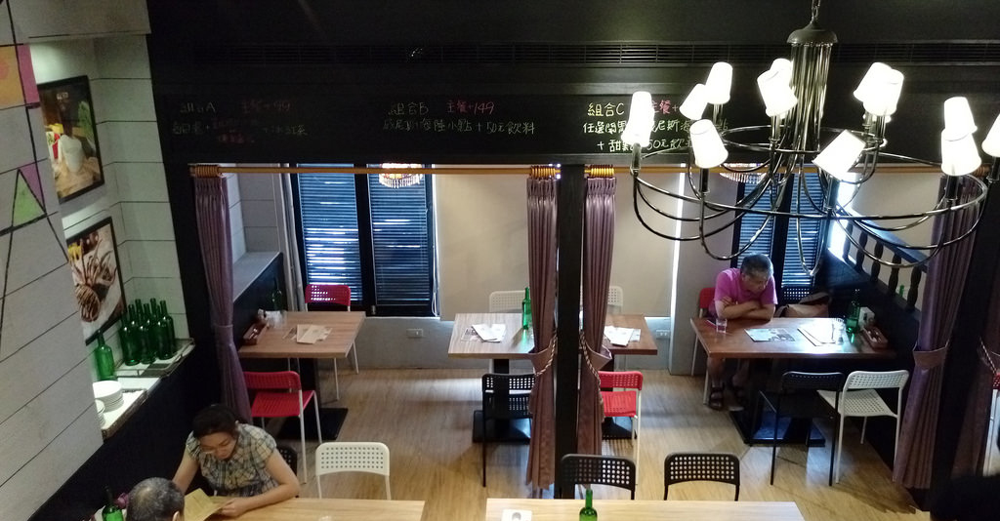
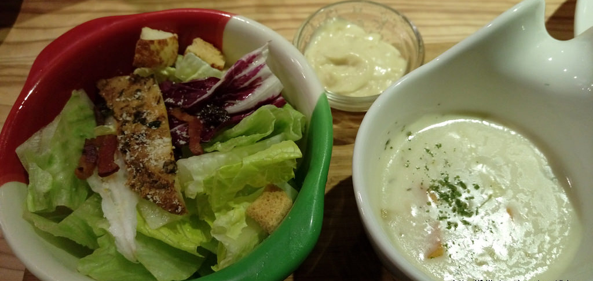

總共有三層半，全部的座位大約只有30個左右,柔合的燈光跟到處都有的小飾品，除了坐位比較擠之外，整家店給人一種歐式居家的舒服感。
一看到菜單驚訝了一下，蠻平價的 主餐單點，低至120元（最經典的番茄肉醬義大利麵）高至260元，
主餐可 +149升級套餐 / +99升級甜點套餐， 除此之外，還有2~4人的分享餐，組合眾多任君挑選！
選擇組合餐會有沙拉跟湯 ，新鮮沙拉沾配著醬汁吃還蠻好吃的，湯頭很香濃趁熱喝最好!
7小時海鮮蕃茄是蕃茄加入數十種香料熬煮7小時以上的Sauce紅醬，所以番茄味道很純濃鮮甜，堪稱店內人氣美食，讓人一口接一口停不下來。

甜點上桌的時候啦， 用湯匙輕輕一挖，眼睛突然為之一亮，原來蛋糕裡頭暗藏巧克力醬！
蛋糕最終抑制不住巧克力醬的潰堤，只好任它向外傾倒，一整個非常濃稠的FU，吃了一口發現是溫熱的，實在太好吃啦！！